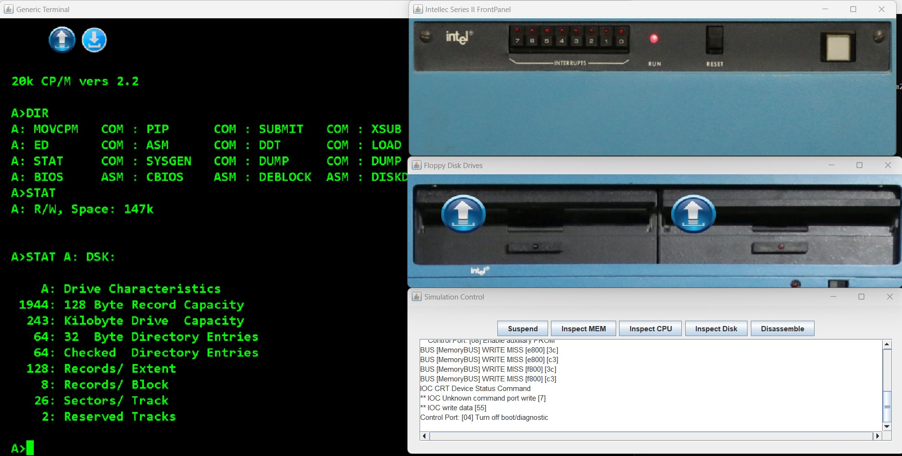
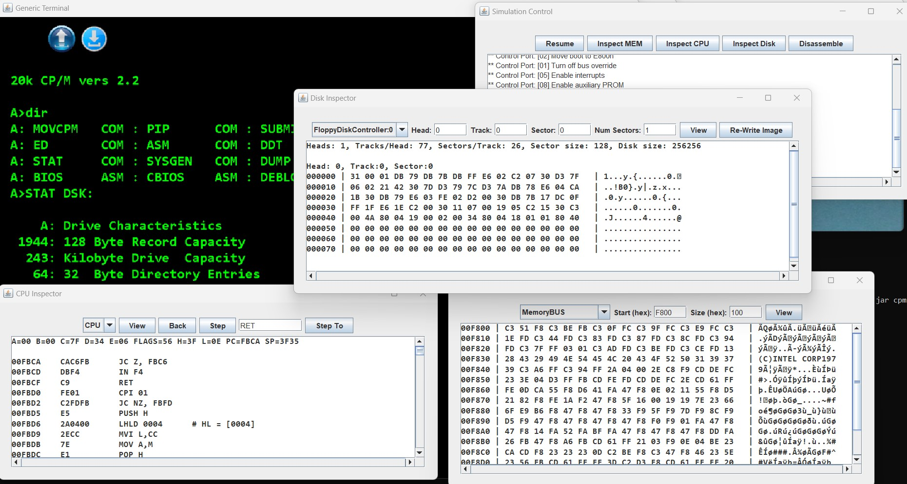
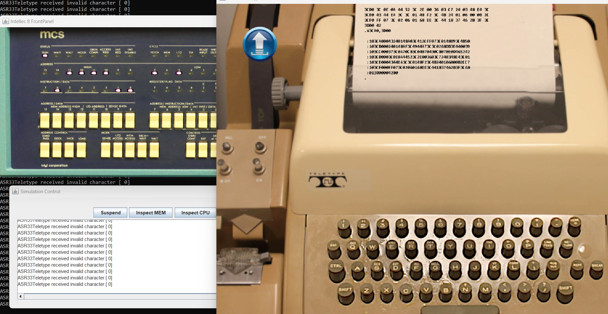

About JSS
The Java System Simulator project aims at simulating old computer architectures. It implements different components (CPU, memory, bus, controller ICs, etc.) as standalone objects that can be connected using a configuration file, specific to the simulation. In addition, it offers a Simulation Control component that can be used to suspend a running simulation, inspect the CPU, step through a program, inspect the memory, inspect the disks, and even disassemble the running code (when the CPU implementation supports it).
Screenshots


